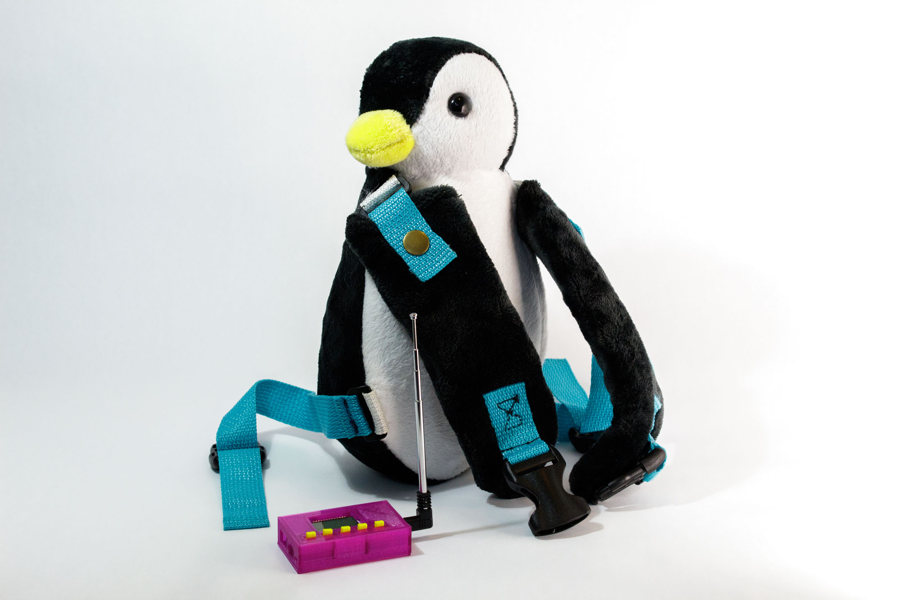

 In 2018, a group of students in Dr. Samosky's Art of Making class at Pitt completed their capstone project. The team created a wearable device for deaf and hard of hearing children that vibrates once music plays and allows the children to feel the music and dance. The original device was a monkey, and children at the Western Pennsylvania School for the Deaf wore the monkeys and danced with instructors from Attack Theatre.
At the beginning of the Spring 2021 semester, I encoutnered a flyer describing Vibrance and asking for students to join the team, as a few of the original members were looking to revamp Vibrance. I immediately joined the team and currently remain a member. I fulfill two different roles, each with one other team member, throughout the process: Branding/Media and User Experience (UX).
My role as part of the Branding/Media Team consists of various pieces: developing the website, creating and maintaing the Facebook account, creating the logo. My role as part of the UX team consists of various pieces: performing user testing, and creating the manual.
In the fall semester of 2020, I virtually volunteered, along with a few other Pitt students to put together four lessons on different topics of technology in which we delivered to the senior members of Macedonia FACE over the course of three months. Additionally, I was provided with a wonderful opportunity to speak at a Pitt Forum on behalf of my student experience.
This semester, I am repeating this amazing opportunity with a new student team and additional, new lessons for senior members of Macedonia FACE. Four lessons are delivered between March and April.
Here are samples from a few lessons: